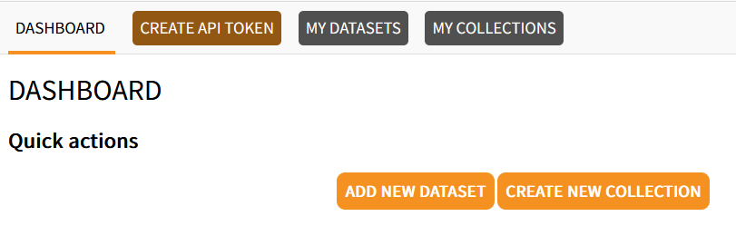
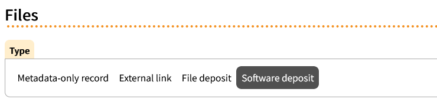

TU Delft and Open Software
TU Delft encourages sharing of your software/code and the TU Delft Research Software Policy preapproves the following licenses: MIT, BSD, Apache, GPL, AGPL, LGPL, EUPL, CC0 when you share your software.
When sharing your software you should also share a version of the software using a data repository. You can either use 4TU.ResearchData or another repository to share your software/code:
4TU.ResearchData
Log in right top using TU Delft credentials
Select ‘Add a New Dataset’:
- 
Add relevant metadata in the information fields
Under the header ‘Files’ you can find the instructions to publish directly from a Git repository under ‘Software deposit’:
- 
Other repositories
Upload your software in another repository (for example: Zenodo).
Go to https://pure.tudelft.nl/admin/ and log in using TU Delft credentials
Select Datasets/Software -> Software
Fill out the metadata in the information fields and add DOI, select license and save the information
Copyright
Ideally you also add a copyright transfer to the shared software (see slide 14 in this presentation), for example:
Technische Universiteit Delft hereby disclaims all copyright interest in the program “Name program” (one line description of the content or function) written by the Author(s).
You can then add a copyright notice to assert your own rights:
© YEAR, [NAME], [REFERENCE project, grant or study if desired]
You can only add copyright transfer to software that you share under an open source software license.
Feedback
Before sharing your code/software in a data repository it can be helpful to ask a colleague or collaborator to review it.
More information
- Full presentation +recording of how to publish software (from 23:14 onwards)
- See also the post on licensing
- Why it’s worth making computational methods easy to use
- Using GitHub Container Registry + Zenodo